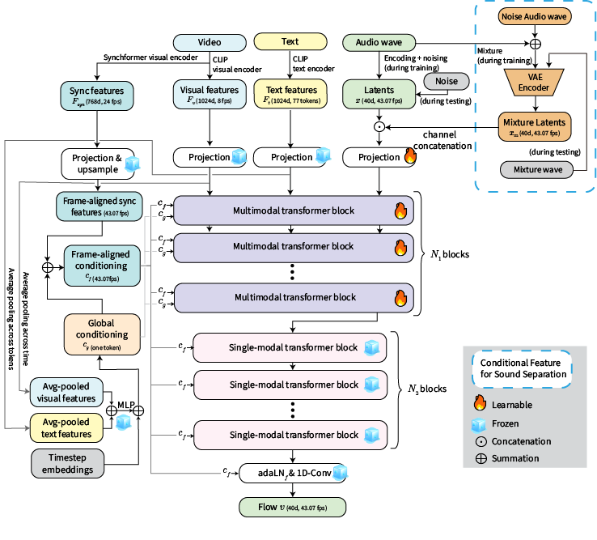

We introduce MMAudioSep, a generative model for video/text-queried sound separation that is founded on a pretrained video-to-audio model. By leveraging knowledge about the relationship between video/text and audio learned through a pretrained audio generative model, we can train the model more efficiently, i.e., the model does not need to be trained from scratch. We evaluate the performance of MMAudioSep by comparing it to existing separation models, including models based on both deterministic and generative approaches, and find it is superior to the baseline models. Furthermore, we demonstrate that even after acquiring functionality for sound separation via fine-tuning, the model retains the ability for original video-to-audio generation. This highlights the potential of foundational sound generation models to be adopted for sound-related downstream tasks.
| MMAudioSep Overview |
|---|
| Fig. 2: The Overview of MMAudioSep Architecture. Ice icons: frozen modules. Fire icons: trainable modules. |
|
 |
| Text Query | Mixture | AudioSep | FlowSep | MMAudioSep (Text) | MMAudioSep (Video) | MMAudioSep (Video+Text) | Ground Truth |
|---|
| Text Query | Mixture | AudioSep | FlowSep | MMAudioSep (Text) | MMAudioSep (Video) | MMAudioSep (Video+Text) | Ground Truth |
|---|
Sample 1
Sample 2
Sample 3
Sample 4
Sample 5
Sample 6
@inproceedings{takahashi2025mmaudiosep,
title={{MMAudioSep}: Taming Video-to-Audio Generative Model Towards Video/Text-Queried Sound Separation},
author={Takahashi, Akira and Takahashi, Shusuke and Mitsufuji, Yuki},
booktitle={ICASSP},
year={2026}
}